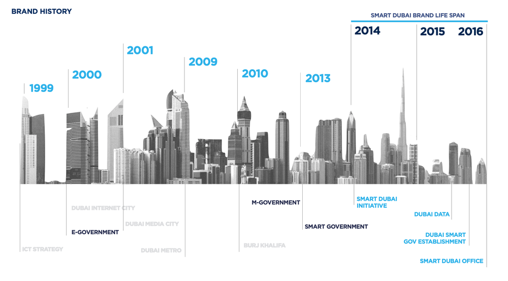

Case Studies
These case studies demonstrate the diverse range of smart city solutions that can be implemented to enhance the sustainability, efficiency, and livability of cities. Successful implementation requires collaboration between stakeholders, careful planning, and a commitment to innovation and sustainability.
Dubai, UAE
Dubai is one of the seven emirates that make up the United Arab Emirates (UAE). It is located on the southeast coast of the Persian Gulf and is known for its stunning architecture, luxurious lifestyle, and modern amenities.
Dubai has a vibrant economy and is a hub for international trade and commerce. It is home to some of the world's tallest skyscrapers, such as the iconic Burj Khalifa, as well as numerous shopping malls, luxury hotels, and entertainment venues.
Tourism is a significant contributor to Dubai's economy, with millions of visitors coming to the city each year to experience its attractions, including the Dubai Mall, the Dubai Fountain, and the Palm Jumeirah.
Dubai is also known for its warm climate, with temperatures reaching as high as 40°C (104°F) during the summer months. However, the city is equipped with air-conditioned indoor spaces and is designed to offer visitors a comfortable and enjoyable experience year-round.
Overall, Dubai is a fascinating destination that offers a unique blend of modern luxury, cultural heritage, and breathtaking landscapes.
Dubai is one of the fastest-growing and most ambitious smart cities in the world. The city has been
investing heavily in technology and innovation to enhance its infrastructure, sustainability, and
quality of life. Here are some of the key smart city solutions that Dubai has implemented:
Smart Transportation:
Dubai has implemented several smart transportation solutions to reduce traffic congestion and improve
mobility. The city has developed an intelligent transportation system that uses real-time data to
optimize traffic flow and provide travelers with real-time information about traffic conditions. Dubai
has also implemented a fleet of autonomous electric vehicles for public transportation, known as the
Dubai Autonomous Transportation System (DATS).
Smart Energy Management:
Dubai has implemented a smart grid infrastructure that uses renewable energy sources like solar power to
generate electricity. The city has also implemented a demand response system that allows consumers to
adjust their energy usage based on real-time pricing signals, resulting in more efficient energy use and
reduced energy costs.
Smart Waste Management:
Dubai has implemented a smart waste management system that uses sensors to monitor waste levels in bins
and optimize waste collection routes. The system has resulted in a 75% reduction in waste collection
costs and a 40% increase in recycling rates.
Smart Buildings:
Dubai has implemented several smart building solutions to enhance energy efficiency and occupant
comfort. The city has implemented a Building Energy Management System (BEMS) that uses sensors and
analytics to optimize building operations and reduce energy consumption. Dubai has also implemented a
smart lighting system that adjusts lighting levels based on occupancy and daylight conditions.
Smart Government:
Dubai has implemented several smart government solutions to enhance public services and engagement. The
city has developed a Smart Dubai platform that provides citizens with access to government services
through a single portal. Dubai has also implemented a blockchain-based system for government
transactions, known as the Dubai Blockchain Strategy.
These smart city solutions have resulted in several benefits for Dubai's citizens, businesses, and
environment. The city has reduced traffic congestion, improved air quality, and enhanced energy
efficiency. Dubai has also improved its waste management practices and increased its recycling rates.
Finally, Dubai has enhanced public services and engagement through its smart government solutions.
